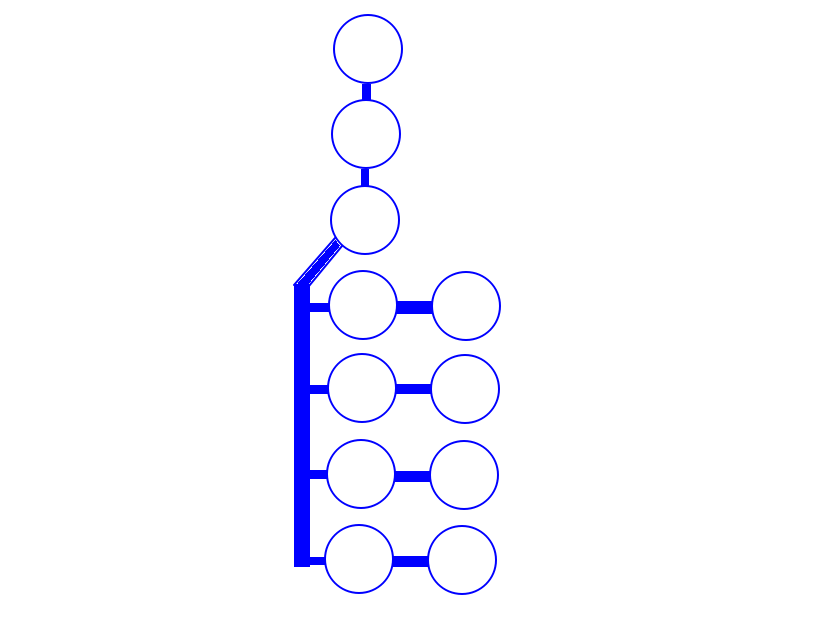
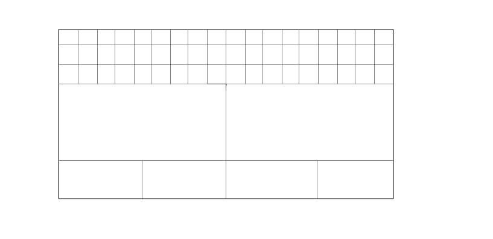

Número de Floculadores:
Diâmetro dos Floculadores: metros
Altura dos Floculadores: metros
Número de decantadores:
Diâmetro dos Decantadores: metros
Altura dos Decantadores: metros
Comprimento do Floculador: metros
Largura do Floculador: metros
Altura do Floculador: metros
Comprimento de cada decantador: metros
Largura de cada decantador: metros
Altura dos Decantadores: metros
Vazão da ETA: L/s
Dosagem de PAC: ml/min
Dosagem de Hipoclorito Pre: ml/min
Dosagem de Alcalinizante: ml/min
Dosagem de Ácido Fluorsilíssico: ml/min
Vazão da ETA: L/s
Dosagem de PAC: mg/L
Dosagem de Hipoclorito Pre: mg/L
Dosagem de Alcalinizante: mg/L
Dosagem de Ácido Fluorsilíssico: mg/L